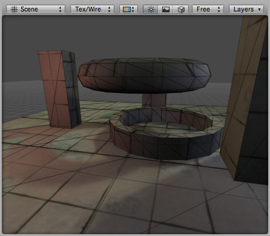

Lightmapped Shader Family
Lightmapped shaders are like Self-Illuminated shaders on steroids. They use a secondary Lightmap texture that defines light "emitted" from the object onto itself (and nothing else). The Lightmap texture also uses the secondary UV map of the mesh for controlling the placement of light, which can differ from the primary UV map. These shaders allows you to use baked colored light, radiosity with color bleeding and other interesting effects.
In-game lights add on top of the illumination that is present in the lightmap. For example, the scene in the following pages with no lights at all looks like below. All the illumination on the model comes only from the lightmap.

Scene with lightmap and no in-game lights
Scene with lightmap and no in-game lights
Lightmapped Vertex-Lit

Assets needed:
- One Base texture, no alpha channel required
- One Lightmap texture, no alpha channel required
Lightmapped Diffuse

Assets needed:
- One Base texture, no alpha channel required
- One Lightmap texture, no alpha channel required
Lightmapped Specular

Assets needed:
- One Base texture with alpha channel for Specular Map
- One Lightmap texture, no alpha channel required
Lightmapped Bumped

Assets needed:
- One Base texture, no alpha channel required
- One Bumpmap normal map, no alpha channel required
- One Lightmap texture, no alpha channel required
Lightmapped Bumped Specular
Assets needed:
- One Base texture with alpha channel for Specular Map
- One Bump normal map, no alpha channel required
- One Lightmap texture, no alpha channel required